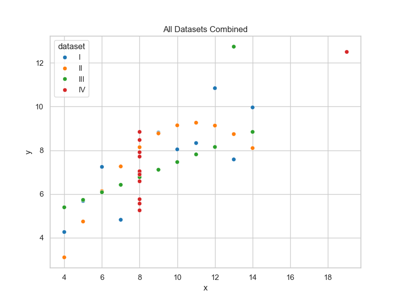

About the Project
This project explores Anscombe’s Quartet, a dataset by statistician Francis Anscombe (1973) designed to emphasize the importance of visualizing data.
Despite having identical statistical summaries — means, variances, and correlations — the four datasets produce very different plots.
Key Message: “Statistics are not enough — always visualize your data.”
Dataset Overview
Each dataset (I, II, III, IV) contains pairs of x and y values with the same basic statistics:
- Mean of X = 9.0
- Mean of Y ≈ 7.5
- Correlation ≈ 0.816
Yet their visual patterns differ dramatically when plotted.
Visualization — Scatter Plots with Regression Lines
Each dataset tells a different story despite identical numbers.

Dataset I shows a linear trend, II a curved relationship, III an outlier affecting the slope, and IV an extreme x-value driving correlation.
Combined and Distribution Visualizations
When combined, the datasets clearly differ in shape and spread:

Violin plots show that the distributions of x and y vary across datasets:

Interactive Visualization (Plotly)
Explore the dataset interactively using Plotly:
Reflection
Anscombe’s Quartet reminds us that summary statistics can be misleading.
Visualization reveals patterns, relationships, and anomalies that numbers alone can’t capture.
For instance:
- Dataset II forms a parabolic curve.
- Dataset III’s outlier skews regression results.
- Dataset IV shows that one extreme value can mimic correlation.
Lesson: Always visualize before concluding from statistics.